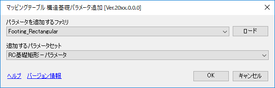

構造基礎パラメータ追加
選択したファミリにマッピングテーブルで設定されたパラメータを選択してパラメータを追加する。
プロジェクトおよび構造基礎ファミリのファミリエディタで使用可能。

■ 項目
パラメータを追加するファミリ
構造基礎としてロードされているファミリをリスト表示する。
ファミリエディタの場合は編集しているファミリに対してパラメータを追加するため選択不可。
追加するパラメータセット
マッピングテーブルに登録しているパラメータ群をリスト表示しファミリに追加するパラメータを選択する。
■ 各ボタン操作
パラメータを追加するファミリがロードされていない場合にパラメータを追加するファミリをロードする。
選択したファミリにマッピングテーブルで指定されたパラメータを追加する
構造基礎パラメータ追加を終了する
『ST-Bridge Link』のヘルプを表示する
『ST-Bridge Link』のバージョン情報を表示する